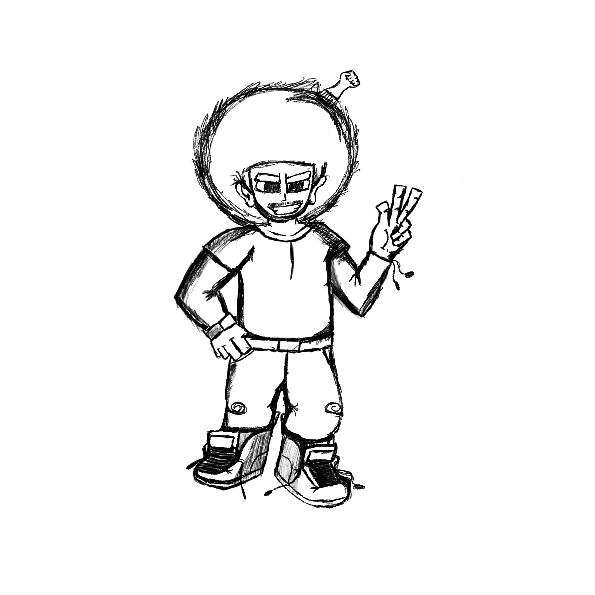

In progress
Sonic Sprite Fighter
A game-development experiment focused on sprite-based combat, movement, and interactive systems.
Read the case studyDeveloper portfolio
Welcome. This site is a curated record of my work across game development, data structures, machine learning, and technical writing.

Selected work
In progress
A game-development experiment focused on sprite-based combat, movement, and interactive systems.
Read the case studyLearning track
A structured practice project for implementing and understanding core data structures and algorithms.
Read the case studyLearning track
Hands-on machine-learning exercises used to build practical familiarity with PyTorch workflows.
Read the case studyTechnical writing
LaTeX documents for organizing notes and explanations in real analysis and abstract algebra.
Read the case studyIn progress
A deliberate practice plan covering language fundamentals, algorithms, debugging, and modern C++ habits.
Read the case studyExploration
A plain HTML and CSS site that documents projects while practicing accessible, maintainable web design.
Read the case studyAbout this site
I use this portfolio to turn experiments into clear project stories: what I built, what I learned, and what I plan to improve next. Project pages are updated as the work evolves.